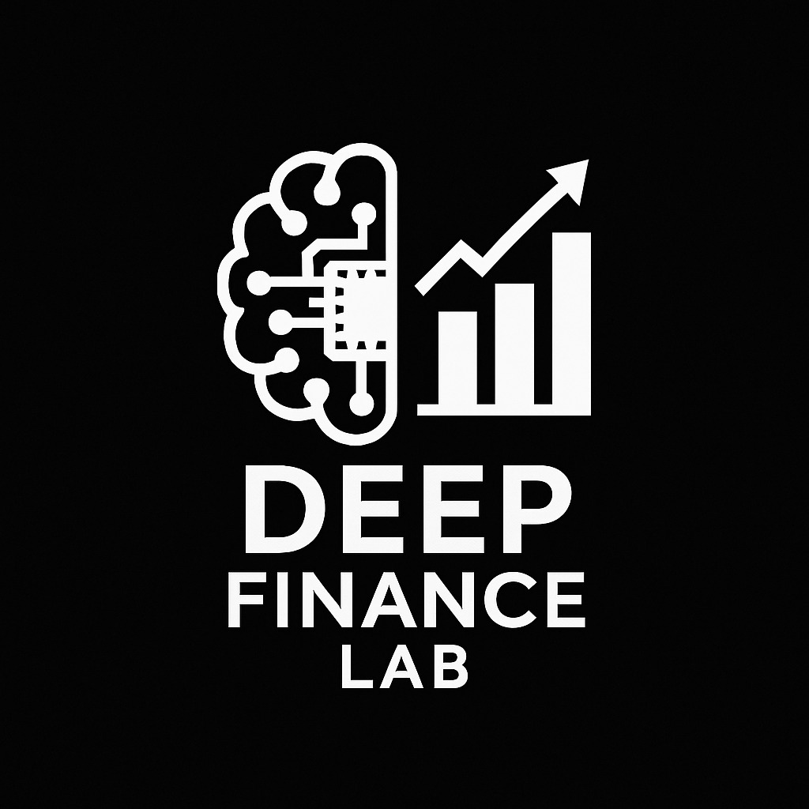

I integrate Artificial Intelligence with Capital Markets strategies to design robust and automated financial solutions.
I develop statistical and machine learning models to estimate default probabilities in debt instruments and corporate credit. I use advanced techniques such as survival analysis, competing risks, and deep neural networks tailored to financial contexts. I incorporate correlations between obligors and systemic risk factors.
I build automated decision-making systems using technical signals, time series analysis, and backtesting with real data. I implement strategies based on machine learning for market microstructure, momentum, mean reversion, and statistical arbitrage. I design robust systems resistant to overfitting and real-world market friction.
I apply techniques such as convex optimization and evolutionary methods to structure efficient portfolios under real constraints. I develop models that consider dynamic correlations, tail risks (CVaR), and multiple objectives. I implement algorithms for rebalancing, replication, and stress testing portfolios.
I use NLP and transformers to extract economic signals from unstructured text such as news and reports. I implement sentiment analysis models specific to the financial domain. I develop systems for entity extraction, topic modeling, and causal relationship inference from financial texts.
Algorithms to identify atypical behaviors in financial data flows with advanced techniques. I combine traditional statistical methods with autoencoders and GANs for detecting complex patterns. I implement real-time monitoring systems for fraud, compliance, and market surveillance.
I simulate adverse conditions for portfolios using Monte Carlo, Bayesian networks, and generative models. I develop personalized stress tests that incorporate macroeconomic shocks, tail correlations, and factor extremes. I create scenario analysis frameworks for regulatory capital requirements.
Our adapted financial models generate disruptive efficiencies across various sectors:
Automated diagnostics through predictive models adapted from credit risk analysis, identifying complex patterns in medical images and clinical data. Medical imaging interpretation and early disease detection using deep learning. Optimization of clinical workflows and resource allocation.
Application of predictive and data analysis models to optimize talent management, improve employee retention, and automate selection processes. Use of natural language processing to analyze employee feedback and engagement. Workforce planning based on behavioral prediction models.
Integration of behavioral economics principles and quantitative models to understand and predict human behavior in financial and market environments. Development of heuristics and bias detection systems. Behavioral simulation frameworks for understanding decision-making.
Application of natural language processing and machine learning to analyze large volumes of legal text, assist in legal research, and support document drafting. Automation of contract analysis and risk identification. Predictive models for litigation outcomes and regulatory compliance.
Use of data analysis and machine learning to improve learning experience, optimize educational management, and personalize teaching. Implementation of early warning systems for student success. Development of adaptive learning platforms based on predictive models.
Intelligent routing based on efficient portfolio theory, optimizing transport fleets as if they were financial assets. Predictive demand models adapted from time series analysis. Supply chain optimization using network theory and operations research.
Spot price prediction with neural networks adapted from financial forecasting models. Generation optimization using stochastic models and Bayesian approaches. Integration of renewable sources through demand-supply balancing algorithms.
Recommendation systems with financial embeddings repurposed for purchase behavior analysis. Demand forecasting using multivariate time series and generative models. Personalization engines based on customer segmentation and neural collaborative filtering.
I am an expert in Capital Markets, Finance and Economics, with specialization in Applied Data Science and Artificial Intelligence.
I combine traditional financial analysis tools with advanced AI techniques: from supervised machine learning, to probabilistic models, deep learning, and large language models. I apply these methodologies to solve complex problems in capital markets, quantitative finance, and emerging applications in other industries.